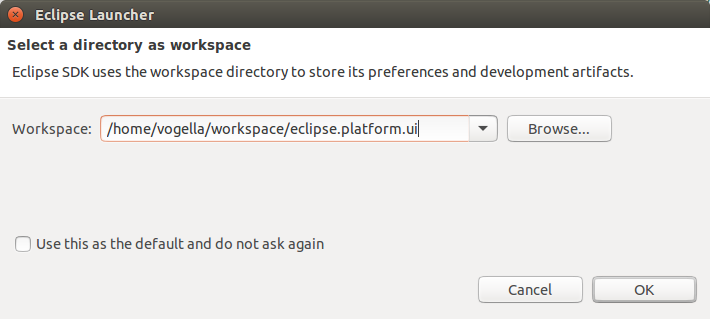

The following is a screenshot of the IDE with a maximized Java editor and several toolbars visible.

The next screenshot shows the same maximized editor but with hidden toolbars.

The recent directory list was also increased to 10. It used to be 5. You can still adjust this value on Preferences > General > Startup and Shutdown > Workspaces.
The reworked dialog looks like this:

Padding: By default, SWT menus now look similar to those in OS X: Text is not strictly aligned. This is due to a new way in which menus are constructed in GTK3 (see https://wiki.gnome.org/HowDoI/GMenu#Icons for more details). In order to align all text entries in a menu, simply launch the SWT application with the environment variable SWT_PADDED_MENU_ITEMS=1.
Checkboxes and images: On GTK2.x, a menu entry was limited to either a checkbox or an image. On GTK3, SWT now supports menu entries that contain both an image and a checkbox.
The image below shows a screenshot of the default GTK3 menu on the left, compared to an aligned GTK3 menu on the right.

SWT.NO_MOVE to create a Shell with no move behavior. Using this style will create the
title trim even if no other trim style is specified. The title trim will not be created when SWT.NO_TRIM is specified.
Note that this style bit is a hint.


org.eclipse.core.runtime.Adapters.adapt(...) provides a new unified way to access every kind of adapter. It checks for
implemented interfaces, IAdaptable, and adapters registered with the adapter manager.
It may also activate plug-ins if necessary to provide the requested adapter.
And it also performs a null check on the source object, so calling code doesn't have to do that.
// Old way
IResource selectedResource;
if (selection instanceof IAdaptable) {
selectedResource = ((IAdaptable)selection).getAdapter(IResource.class);
}
// New way
IResource selectedResource = Adapters.adapt(selection, IResource.class);
org.eclipse.core.runtime.SubMonitor.split(...) is an easy, efficient way to check for Job cancellation without any
boilerplate. It creates a new child progress monitor, checks for cancellation, and
throws OperationCanceledException if necessary. Using this instead of SubMonitor.newChild
or SubProgressMonitor will guarantee that your Jobs respond to cancellation quickly.
// Old way
void myMethod(IProgressMonitor monitor) {
SubMonitor subMonitor = SubMonitor.convert(monitor, 2);
if (subMonitor.isCanceled()) {
throw new OperationCanceledException();
}
childMethod1(subMonitor.newChild(1));
if (subMonitor.isCanceled()) {
throw new OperationCanceledException();
}
childMethod2(subMonitor.newChild(1));
}
// New way
void myMethod(IProgressMonitor monitor) {
SubMonitor subMonitor = SubMonitor.convert(monitor, 2);
childMethod1(subMonitor.split(1));
childMethod2(subMonitor.split(1));
}
// Old way
void myMethod(IProgressMonitor monitor) {
SubMonitor subMonitor = SubMonitor.convert(monitor, 2);
uncancellableMethod(null);
subMonitor.worked(1)
cancellableMethod(subMonitor.newChild(1));
}
// New way
void myMethod(IProgressMonitor monitor) {
SubMonitor subMonitor = SubMonitor.convert(monitor, 2);
uncancellableMethod(subMonitor.newChild(1,
SubMonitor.SUPPRESS_ISCANCELED | SubMonitor.SUPPRESS_BEGINTASK);
cancellableMethod(subMonitor.newChild(1));
}